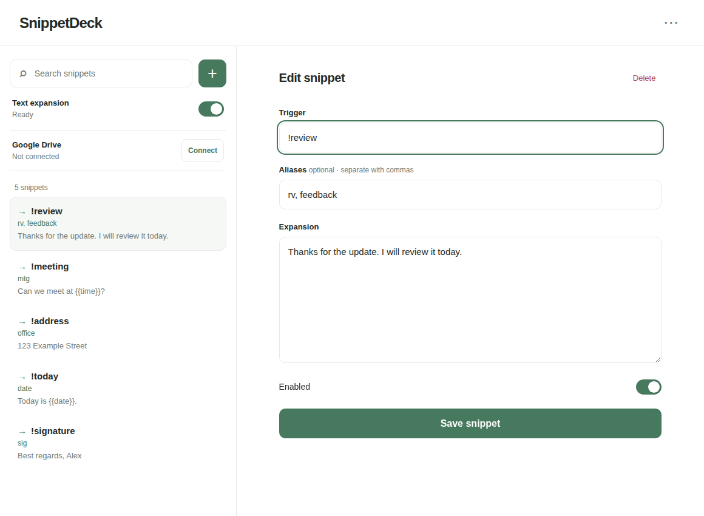
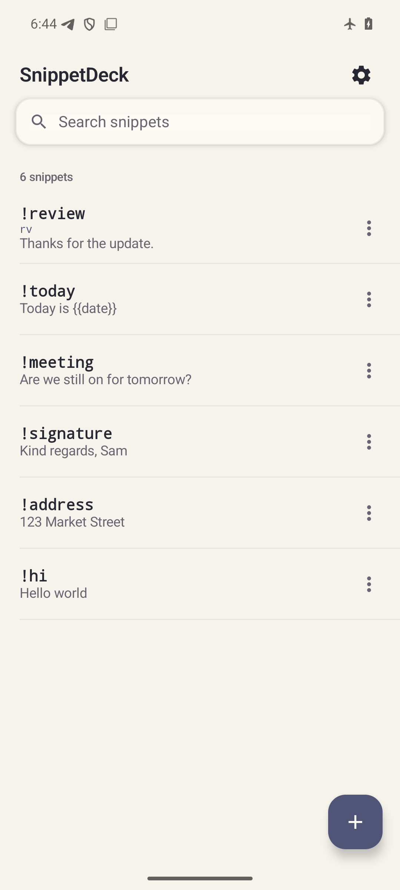

Write once. Expand anywhere.
SnippetDeck replaces short triggers with text you save on Android, Windows, macOS, and Linux. Keep your library local, or choose to sync it through your own Google Drive account.
Fast expansion
Type a trigger such as !review and press Space. Aliases and date or time placeholders help with repeated text.
Local by default
Your snippet library stays on your device. Portable JSON and text backups make it easy to keep a separate copy.
Sync when you choose
Connect Google Drive to exchange snippets between your devices. Offline edits remain available, and conflicting edits require your choice.
One library across your devices
Install the official Android APK or a desktop installer for Windows, macOS, or Linux from the same GitHub release. Android requires version 13 or newer. Text expansion works on Linux X11; on Wayland, the library editor remains available.


Your Google Drive, your choice
Google Drive sync is optional. With your permission, SnippetDeck writes snippets to its private app-data folder in your Drive. Google can access this data because it is not end-to-end encrypted. SnippetDeck does not operate an account server or collect analytics. Read the privacy policy before connecting.